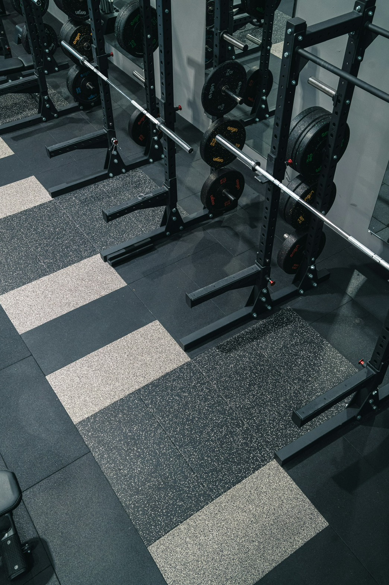
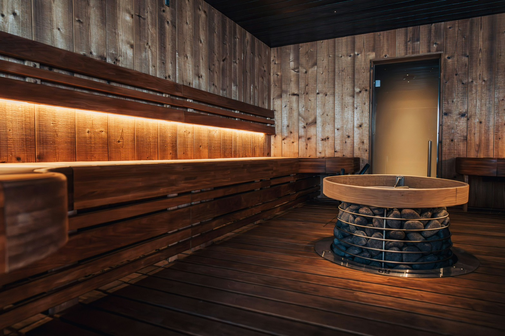

筋トレ
最近は筋肉を大きくすることよりも、体力や持久力をつけることを目的にトレーニングしています。 健康な体を維持しながら、無理なく継続することを大切にしています。
上田 凌雅 / Ueda Ryoga
Web Developer (PHP / Laravel)
プロフィールをご覧いただきありがとうございます。私がプログラミングの学習を始めたきっかけは、将来に向けた強みとなるスキルを身につけたいと考え、Progateで触れたことでした。そこで「自分の手でゼロからサービスを作り上げる楽しさ」を強く実感しました。
当初は趣味の筋トレ管理アプリの個人開発からスタートしましたが、データベース設計やフレームワークの運用など、実務レベルの開発における独学の限界や壁を感じました。そこで、より実践的で確実なスキルを習得するためスクールでの受講を決意しました。現在は、Laravelを用いたバックエンド開発からGitでのバージョン管理、品質を担保するためのテスト実装まで、実務を見据えた一貫した開発力を日々学んでいます。

最近は筋肉を大きくすることよりも、体力や持久力をつけることを目的にトレーニングしています。 健康な体を維持しながら、無理なく継続することを大切にしています。

最近は薪サウナにハマっています。薪がパチパチと燃える様子を眺めているだけで癒やされます。 自分で薪を足していく作業も大好きで、炎を眺めながらゆっくり過ごす時間がお気に入りです。
コーヒーはブラックで飲むのが好きです。 自宅でゆっくり飲んだり、カフェで過ごしたりと、そのときの気分に合わせて楽しんでいます。 コーヒーを飲みながら、将来のことを考える時間がお気に入りです。